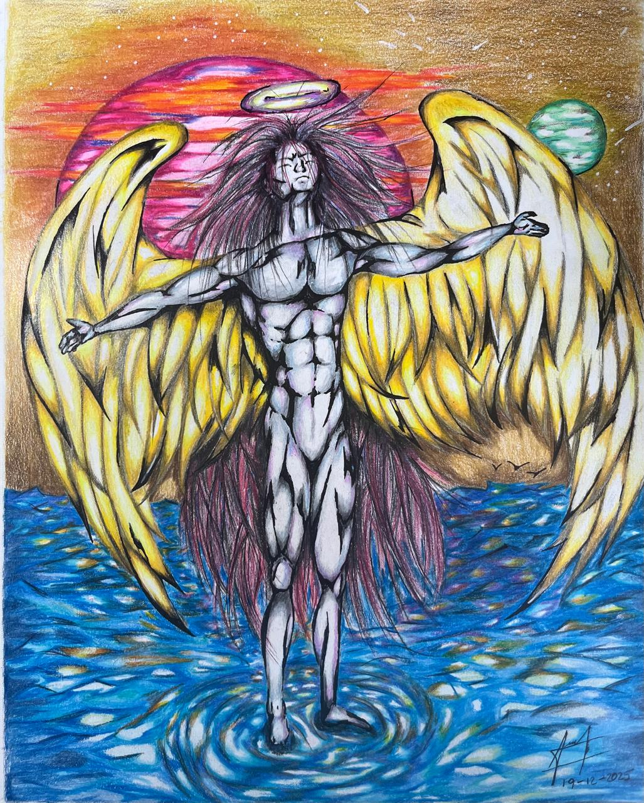

01 · Original · Paisaje cósmico
Una locura lunar
Desde
$25.000 COP
Dibujos hechos a mano · Colombia
Cada dibujo representa algo para su creador: una emoción, una pregunta, una memoria o una forma de mirar el mundo.
Réplicas impresas de una colección de mundos imposibles, trazados a mano con lápices de colores por un mismo artista.
 colección
colección01 / La colección
Las obras originales son hechas a mano por el mismo artista. Cada imagen nace en papel y conserva su textura, su pulso y su rareza. Elige la que más te identifique.
01 · Original · Paisaje cósmico
Desde
$25.000 COP

02 · Original · Retrato surreal
Desde
$25.000 COP

03 · Original · Amor fantástico
Desde
$25.000 COP

04 · Original · Viaje imposible
Desde
$25.000 COP

05 · Original · Fe y refugio
Desde
$25.000 COP
06 · Original · Universo interior
Desde
$25.000 COP

07 · Original · Mirada interior
Desde
$25.000 COP

08 · Original · Naturaleza fantástica
Desde
$25.000 COP

09 · Original · Identidad
Desde
$25.000 COP

10 · Original · Equipo imposible
Desde
$25.000 COP
No encontramos obras en esta categoría.
03 / La mirada del artista
“Cada dibujo representa algo para su creador: una emoción, una pregunta, una memoria o una forma de mirar el mundo.”
El artista no es famoso ni busca serlo; sintió la necesidad de compartir su arte y dejar que cada persona encuentre en él un mensaje especial. Cada obra tiene una intención, pero no una única respuesta: su significado también se completa con la historia de quien la lleva a casa.
Las obras son originales y están hechas a mano con lápices de colores por un mismo artista. Lo que recibes es una réplica impresa de esa pieza original, para hacerla parte de tu propia historia.
Quiero hablar sobre una obra04 / Formatos y precios
Precios definidos para una réplica de cualquiera de las diez obras. El valor final incluye la impresión; el envío se cotiza aparte.
Los precios corresponden a una sola réplica de la obra que elijas. Para pedidos desde otros países, el precio se convierte a la moneda local y se suma el envío internacional.
05 / Antes de pedir
La disponibilidad, los tiempos y el envío se confirman de manera personalizada por WhatsApp.
Una réplica impresa de la obra original que elijas. El formato, acabado y condiciones finales se confirman antes del pedido.
Elige una obra y un formato, luego escríbenos por WhatsApp. Allí confirmamos disponibilidad, tiempos y envío.
El precio mostrado incluye la impresión. El envío se cotiza aparte según la ciudad o país de entrega.
06 / Encarga tu réplica
Por ahora, los pedidos se coordinan por WhatsApp. Dime qué obra te gustó, el formato y la ciudad de entrega; te confirmo disponibilidad, tiempos y envío.